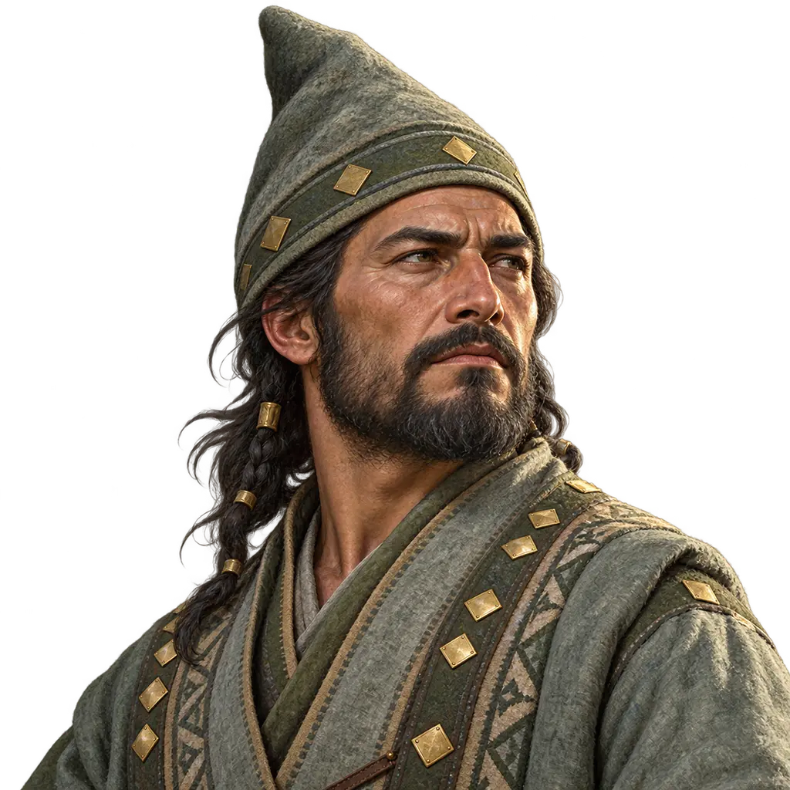
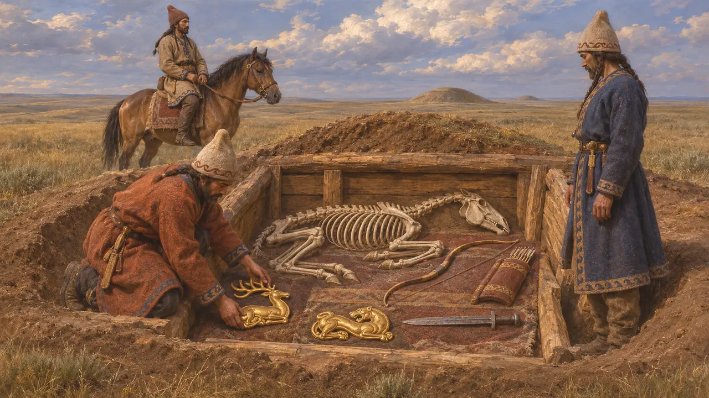
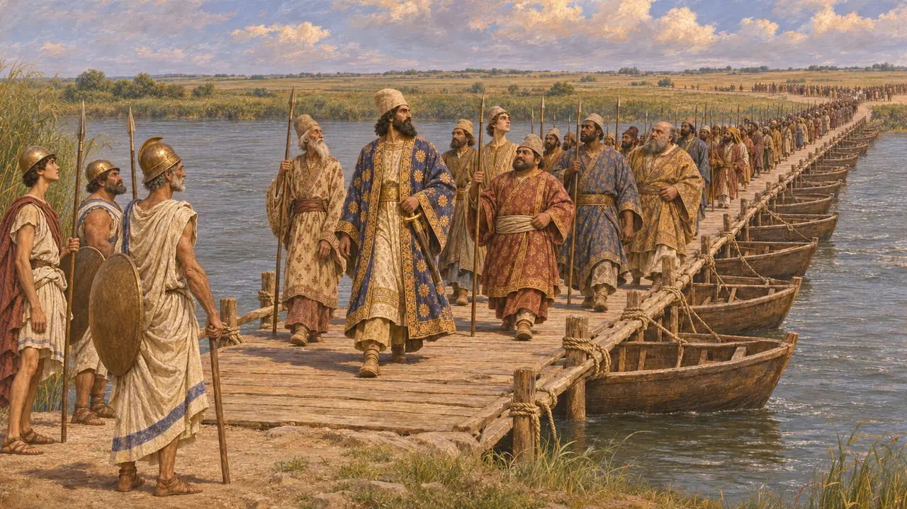
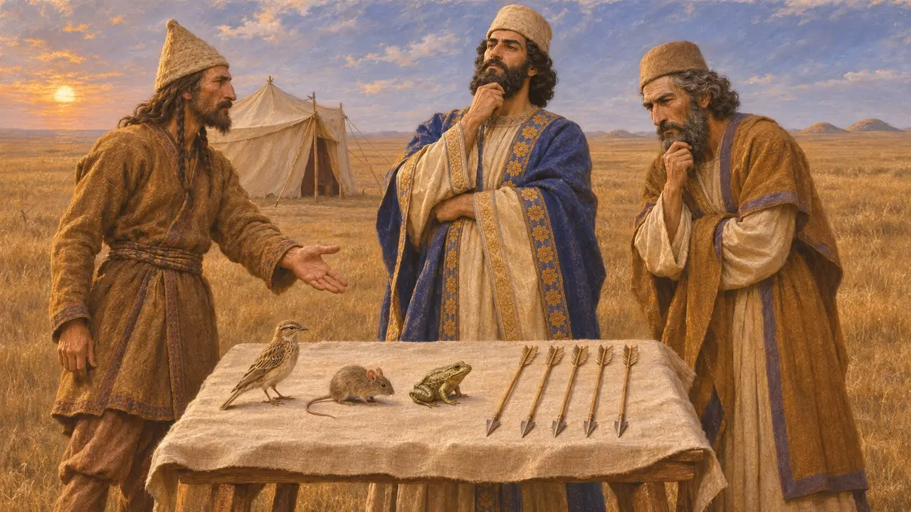
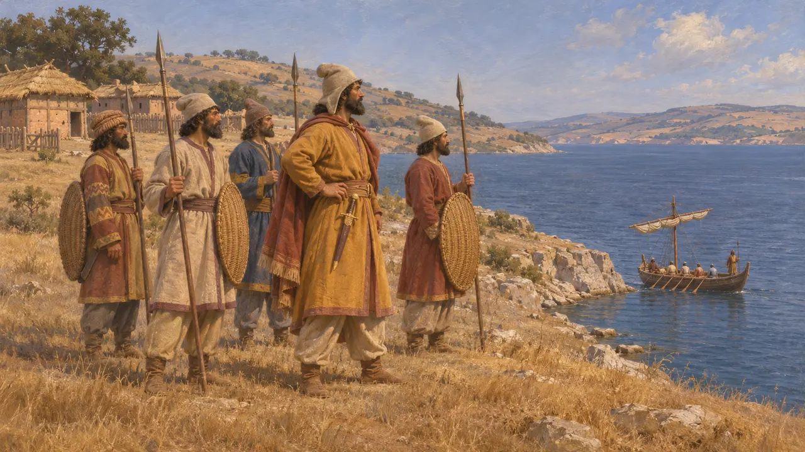
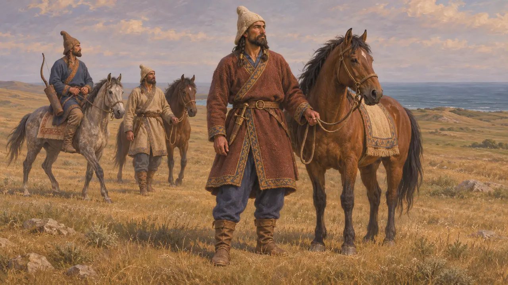
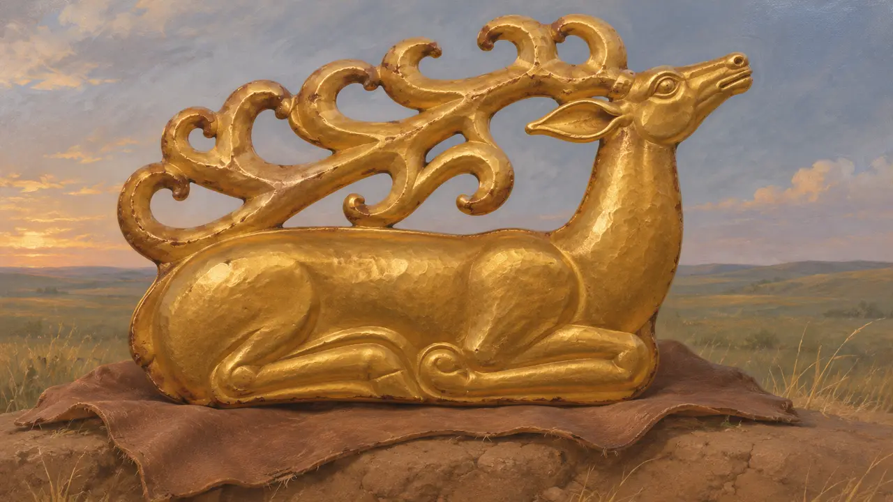

Os Citas
Povos nômades da estepe ao norte do mar Negro, inimigos de Dario por volta de 513 AEC
No jogo: Nível 6: A Ponte de Barcos
Os citas eram povos cavaleiros, em grande parte nômades, das estepes ao norte do mar Negro, que falavam línguas iranianas aparentadas com o persa. Por volta de 513, Dario conduziu um exército através do Bósforo e do Istro até suas terras. Eles recuaram diante dele em vez de lutar, e a campanha se tornou uma das grandes histórias de Heródoto sobre um rei superado em astúcia.
No jogo: O jogo faz dos citas um parceiro comercial e o inimigo da fase do Istro. Na verdade, seu comércio passava principalmente por colônias gregas como Istros e Ólbia, e Heródoto diz que eles evitaram a batalha campal com Dario.

Cavaleiros e kurgans da estepe
Nos registrosOs montes funerários escavados, ou kurgans, espalhados pela estepe do Kuban ao Dnieper guardam cavalos, armas e ouro trabalhado em estilo animal a partir do século VII. Sepulturas antigas como a de Kelermes, no Kuban, mostram contato com o Oriente Próximo, onde textos assírios mencionam um povo do norte chamado Ishkuza. Os montes reais mais ricos, como Chertomlyk e Solokha, são posteriores a Dario e datam do século IV.
R. Rolle, The World of the Scythians, 1989

Dario atravessa o Istro
Relato antigoHeródoto conta que Dario atravessou o Bósforo por uma ponte de barcos construída por Mândrocles de Samos e depois o Istro por uma segunda ponte guardada pelos tiranos jônios. Ele atribui ao exército 700.000 homens e 600 navios, números que os historiadores consideram muito exagerados. Os citas recusaram a batalha, entupiram poços e fontes e destruíram as pastagens. Segundo Heródoto, Dario por fim escapuliu durante a noite, deixando no acampamento os doentes e os jumentos para enganar o inimigo.
Herodotus 4.83-98; 4.118-142

O enigma dos presentes do rei
Lenda posteriorHeródoto conta que o rei cita Idantirso respondeu ao desafio de Dario dizendo que seu povo não tinha cidades nem campos a defender, apenas os túmulos de seus pais. Mais tarde, os citas enviaram um pássaro, um rato, uma rã e cinco flechas. Dario os interpretou como rendição, mas Góbrias disse que significavam a morte pelas flechas, a menos que os persas pudessem voar, escavar a terra ou fugir a nado. A história é moldada como uma lição sobre o orgulho real e é mais bem lida como um conto.
Herodotus 4.126-132

O que a campanha alcançou
DisputadoAs estimativas modernas para a data vão de cerca de 519 a 512, e a rota é incerta. Estrabão situa a crise de sede do exército no deserto dos getas, perto do Istro, o que alguns interpretam como sinal de que a marcha foi menos longe do que diz Heródoto. Heródoto apresenta um quase desastre, mas muitos historiadores, entre eles Briant, veem uma guerra limitada cujo verdadeiro resultado foi o controle persa da Trácia e dos estreitos, assegurado por Megabazo depois que o Rei voltou à Ásia.
P. Briant, From Cyrus to Alexander, 2002; Strabo, Geography book 7; Herodotus 4.143-144; 5.1-2

Os saka além do mar
Nos registrosNas inscrições em persa antigo, Saka é o nome dado a vários povos das estepes. A inscrição do túmulo de Dario em Naqsh-e Rostam inclui, entre as terras de seu império, os saka que estão além do mar, e uma figura deles, identificada por uma legenda, aparece entre os portadores do trono esculpidos no túmulo. Muitos historiadores os identificam com os citas europeus ou seus vizinhos, embora se discuta até que ponto Dario os governou, se é que os governou.
DNa; DNe

O emblema ao lado do nome
Nos registrosOs citas portam um cervo enrodilhado, a fera do ouro cita em estilo animalista, segundo a placa de cervo do túmulo em monte de Kostromskaya, do século VII-VI AEC. É um emblema inspirado em sua arte; Heródoto não descreve nenhum estandarte cita.
Hermitage Museum, Kostromskaya stag; Herodotus 4.1-82
Fontes
- Herodotus, Histories book 4
- DNa
- DNe
- P. Briant, From Cyrus to Alexander, 2002
- R. Rolle, The World of the Scythians, 1989
- Strabo, Geography book 7